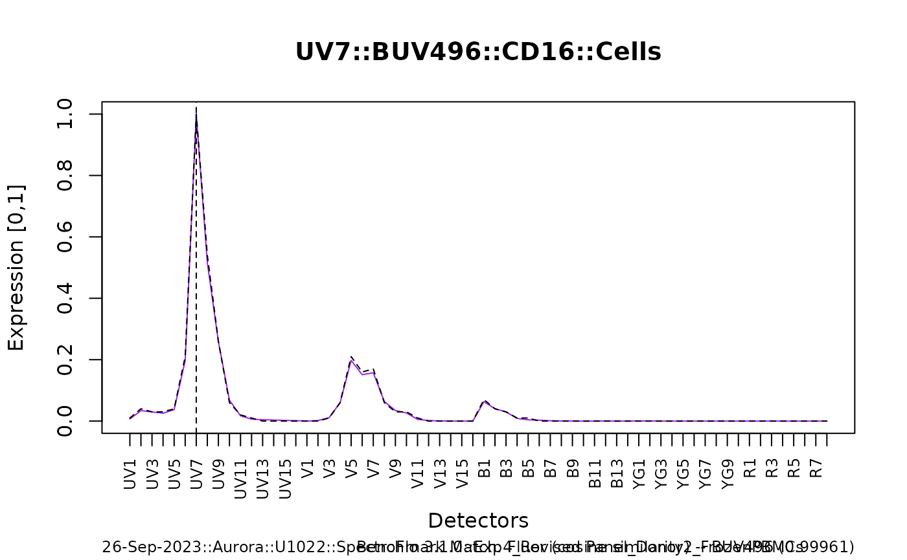

Plot a Spectral Trace
Usage
plot_trace(spectra, plot.type = c("base", "plotly"), benchmark = FALSE)Arguments
- spectra
data.table – the return of spectracle.
- plot.type
The plot type to be used – default
base.basewill print to the active device;plotlywill return an object.- benchmark
logical – default
FALSE; ifTRUE, derived spectra will be benchmarked against an internal reference library and the closest match (cosine similarity) will be reported as both a black, dashed trace and caption text.
Value
A plot is printed to the active device; if plot.type is defined as plotly, a plotly object will be returned.
Examples
## due to large file sizes, the .fcs files used in this example were first
## fully processed -- spectra was derived and saved; load here
spectra.files <- list.files(
system.file("extdata/prepared_spectra", package = "spectracle"),
full.names = TRUE
)
names(spectra.files) <- sub(".rds", "", basename(spectra.files))
spectra.examples <- lapply(spectra.files, readRDS)
spectra <- spectra.examples$spectra_expt2
plot_trace(spectra[sample.id == "CD16 BUV496 (Cells)"])
plot_trace(spectra[sample.id == "CD16 BUV496 (Cells)"], benchmark = TRUE)

if (FALSE) { # \dontrun{
spectra <- spectra.examples$`spectracle_OMIP-109`$spectra
p <- plot_trace(spectra, plot.type = 'plotly')
p$UV
} # }